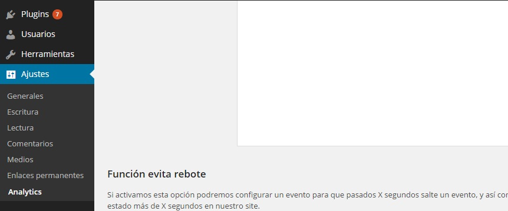
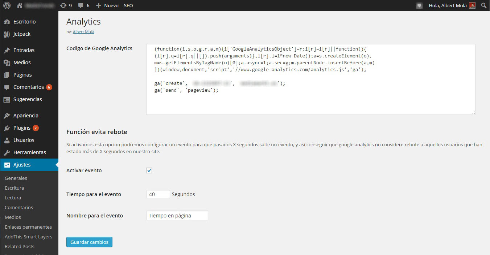

Como funciona
Una vez instalado el plugin, aparecerá una nueva opción llamada Analytics en el panel Ajustes de Wordpress.

Desde esta opción podremos gestionar todas las opciones del plugin. Veamos cada una de ellas:
- Codigo Analytics: Aquí deberemos insertar el codigo de analytics completo para el trakeo de nuestro site. Este codigo debe incluirse sin las etiquetas <script></script>.
- Activar evento: Si esta marcada esta opción se ejecutará un evento a los segundos que definamos. Este evento solo salta en páginas y posts (no en la home ni en listados de categoria etc...). Se nos desplegarán dos opciones más:
- Tiempo del evento: Tiempo en segundos a los que queramos que salte el evento.
- Nombre del evento: Nombre que tendra nuestro evento en Google Analytics.
